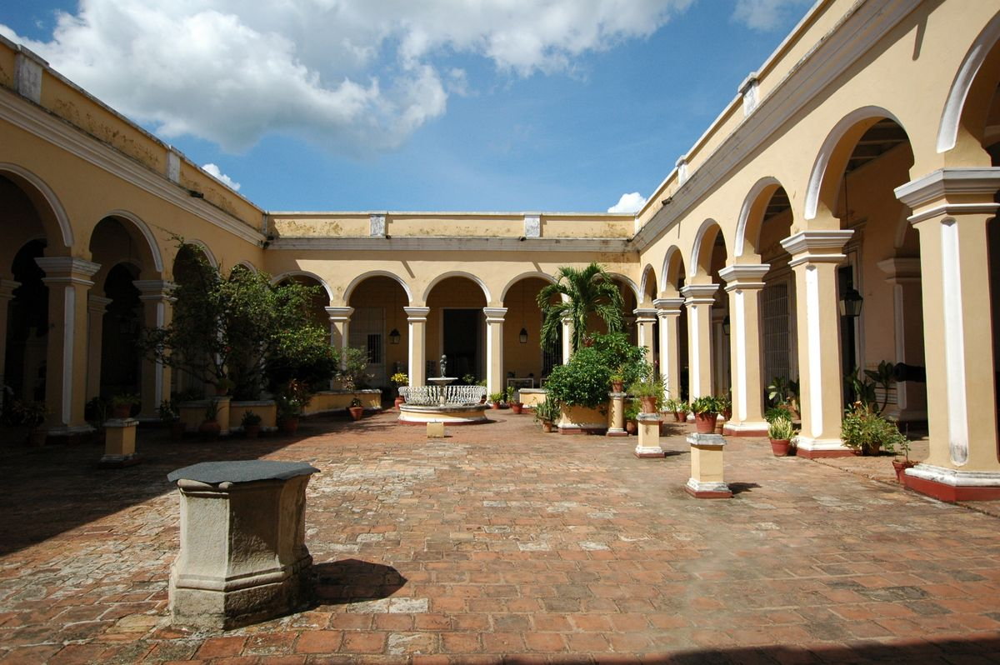
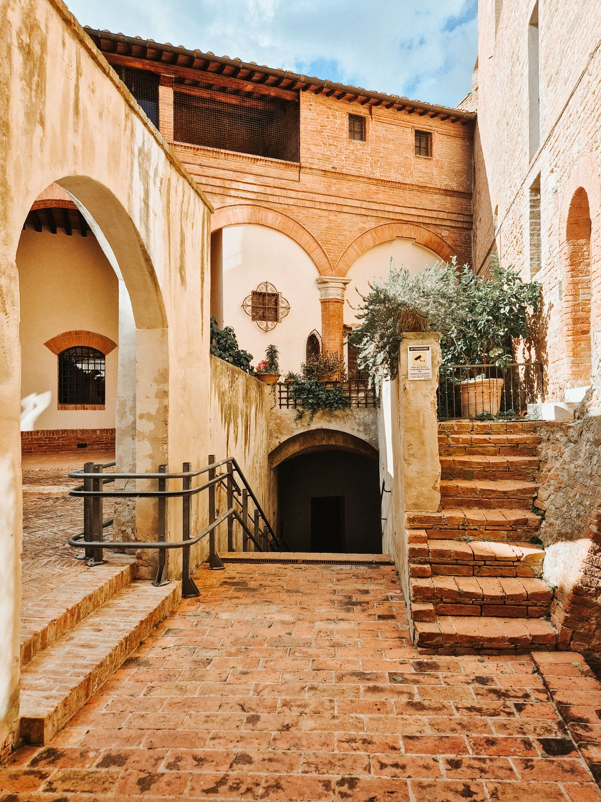
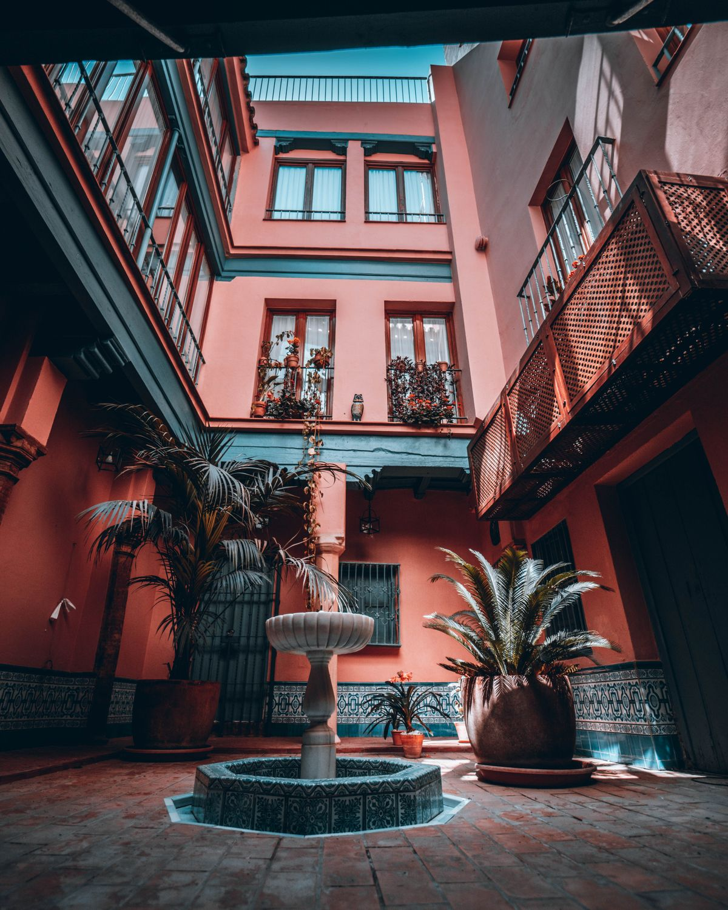

Events at Race and Religious at Race & Religious
A historic New Orleans venue of three 1830s buildings around brick courtyards and a gas-lit pool.
Weddings
Weddings in three 1830s buildings around brick courtyards.
Receptions
Receptions in the courtyards and historic rooms.
Rehearsal dinners
Rehearsal dinners at the venue.
Parties
Parties and private events.
Overnight stays
Overnight stays at the venue.
Film and photo rentals
The venue is available for film and photo rentals.
Open catering
Bring the caterer of your choice.
Gallery



All gallery photos are stock photos, labeled as such. They show historic courtyards with arches and brick floors, not this venue.
Contact
Race & Religious serves New Orleans, LA. Questions? Call (504) 523-0890.